Miksy¶
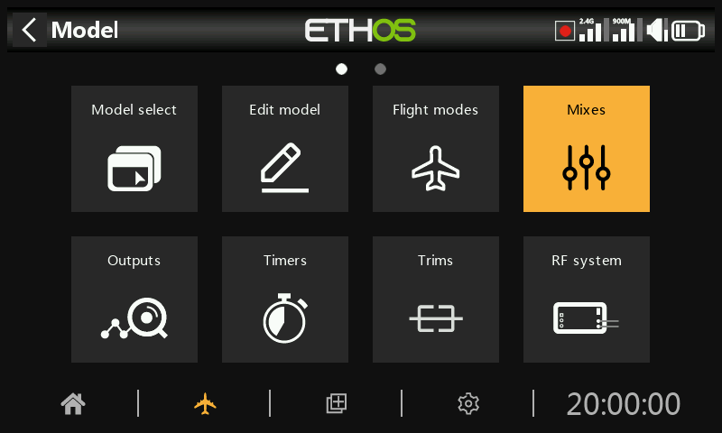
Miksy stanowią rdzeń programowania modelu w Ethos — to tutaj sygnały wejściowe (drążki, przełączniki, czujniki, wszystko, co może być źródłem) są kierowane, kształtowane i łączone na kanały wyjściowe. Dla każdego modelu można zdefiniować do 120 miksów.
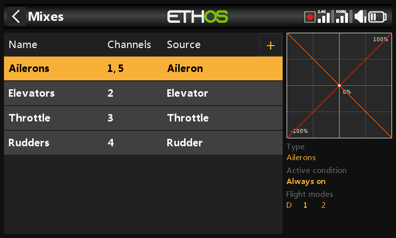
Jeśli model został utworzony za pomocą kreatora Wybór modelu, jego podstawowe
miksy (lotki, ster wysokości, gaz, ster kierunku oraz wszystko inne, czego
wymaga dany płatowiec) są już tutaj wprowadzone. Wybranie miksu i naciśnięcie
ENT otwiera menu kontekstowe pozwalające go edytować, dodać nowy miks,
przełączyć się na widok według kanałów, zmienić kolejność,
zduplikować lub usunąć. Nieaktywne miksy są wyszarzone, a usunięcie zawsze
wymaga wcześniejszego potwierdzenia.
Budowa miksu¶
Każdy miks zawiera ten sam zestaw pól, niezależnie od kategorii, z której pochodzi. Miks lotek jest reprezentatywnym przykładem — miksy steru wysokości i steru kierunku mają identyczny układ.
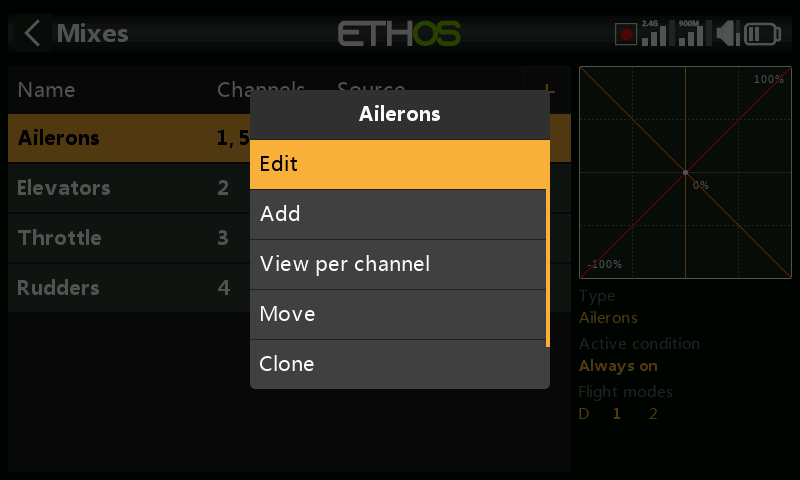
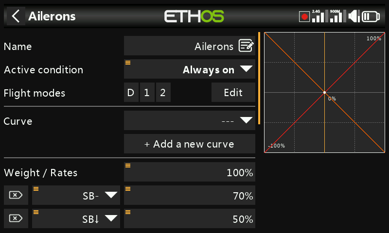
Nazwa — domyślnie odpowiada typowi miksu, można ją edytować.
Warunek — domyślnie Zawsze. Może zostać ograniczony do pozycji przełącznika, przełącznika funkcyjnego, przełącznika logicznego, trybu lotu, zdarzenia systemowego (odcięcie/blokada gazu) lub pozycji trymu — wówczas miks działa tylko wtedy, gdy warunek jest spełniony.
Tryby lotu — jeśli tryby lotu są zdefiniowane, miks może być dodatkowo ograniczony do jednego lub kilku z nich.
Krzywa — domyślnie dostępna jest krzywa Expo (0 = liniowa; wartości dodatnie łagodzą reakcję wokół pozycji neutralnej, ujemne ją zaostrzają):
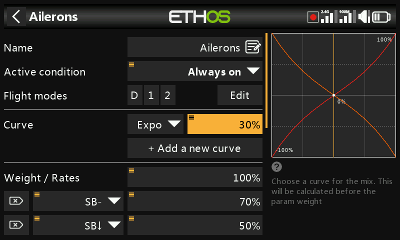
Zamiast niej można wybrać dowolną krzywą zdefiniowaną wcześniej w sekcji Krzywe. Na jednym miksie można nałożyć do 6 krzywych, każdą z własnym warunkiem — jeśli jednocześnie spełniony jest więcej niż jeden warunek, pierwszeństwo ma krzywa znajdująca się wyżej na liście. Krzywe są stosowane przed wartościami przełożeń.
Przełożenia — jeden lub więcej wierszy wagi, z których każdy może być opcjonalnie uzależniony od przełącznika, przełącznika funkcyjnego, przełącznika logicznego, pozycji trymu lub trybu lotu. Pierwszy wiersz jest domyślny i aktywny zawsze, gdy nie jest spełniony warunek żadnego innego wiersza:
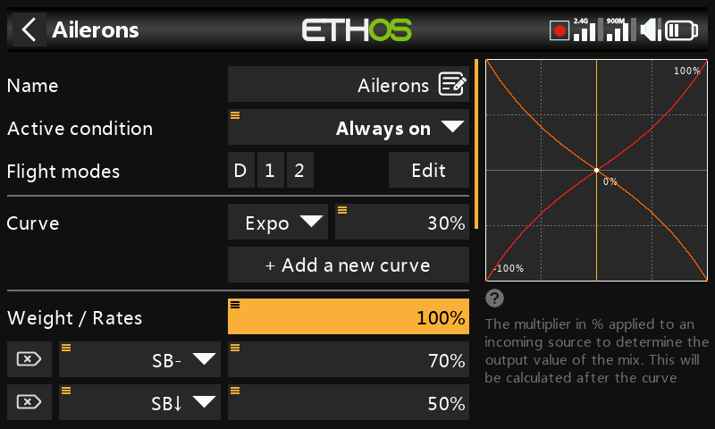
Zamiast stałej wartości procentowej przełożenie może być sterowane ze źródła — na przykład z potencjometru, aby regulować przełożenie w locie:
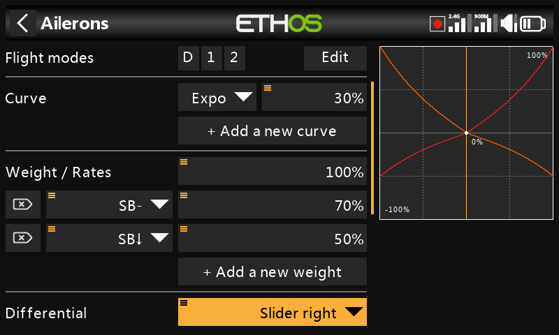
Różnicowanie (od -100 do 100, domyślnie 0) — zapewnia większy wychył w jedną stronę niż w drugą. W przypadku lotek jest to klasyczny zabieg polegający na większym wychyleniu w górę niż w dół, redukujący moment odchylający. Pole pojawia się dopiero wtedy, gdy miks steruje więcej niż jednym kanałem wyjściowym; różnicowanie ma sens wyłącznie przy konfiguracji wyjść typu usterzenie motylkowe lub dwie osobne lotki.
Liczba kanałów / wyjść — ile kanałów wyjściowych obsługuje ten miks i do których fizycznych wyjść są one przypisane:
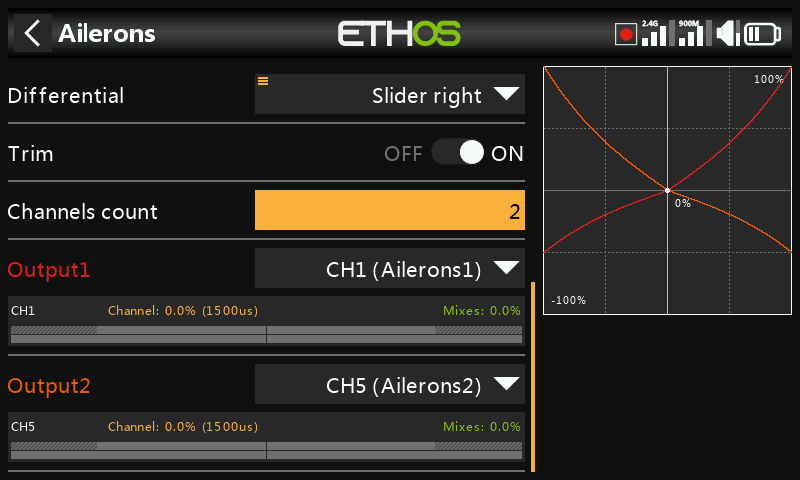
Długie naciśnięcie ENT na kanale wyjściowym w innym miejscu interfejsu
(np. w sekcji Wyjścia) przenosi bezpośrednio z powrotem na tę
stronę.
Miks gazu¶
Miks gazu to miks lotek/steru wysokości/steru kierunku uzupełniony o opcje bezpieczeństwa specyficzne dla napędu.
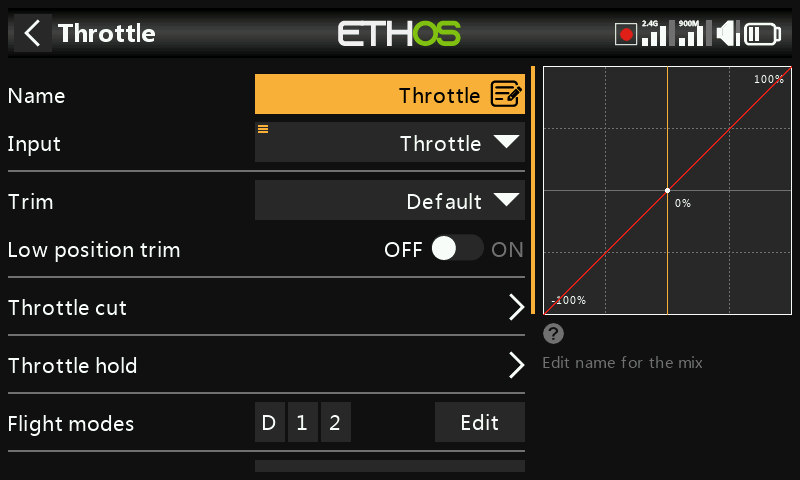
Wejście — źródło gazu, standardowo drążek gazu, ale można je zastąpić potencjometrem, suwakiem, przełącznikiem, trymem, kanałem, osią żyroskopu, kanałem trenera, timerem lub dowolnym innym źródłem.
Trym biegu jałowego — w przypadku silników spalinowych pozwala dedykowanemu trymowi regulować obroty biegu jałowego bez wpływu na pozycję pełnego gazu. Przy włączonym trymie biegu jałowego kanał gazu znajduje się na poziomie -75% przy drążku w dolnym położeniu, a trym gazu reguluje bieg jałowy w zakresie od -100% do -50%:
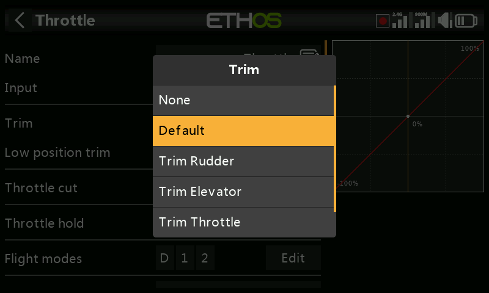
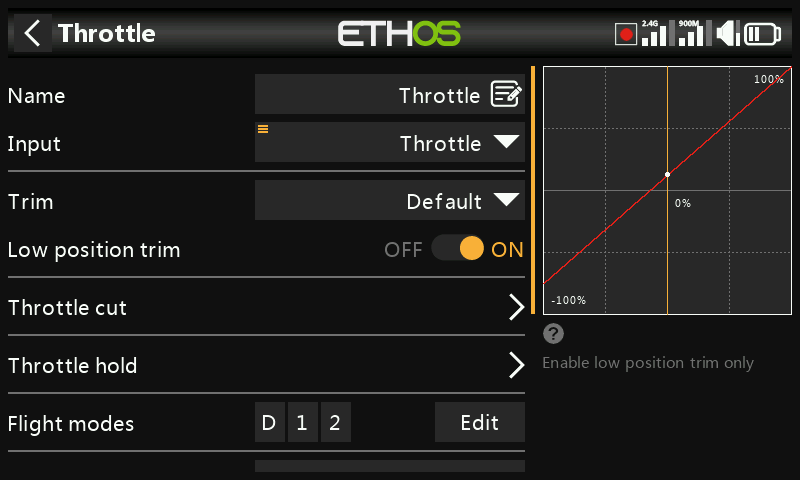
Odcięcie gazu — twarda blokada bezpieczeństwa: kanał staje się aktywny dopiero po przeprowadzeniu drążka gazu przez pozycję biegu jałowego, dzięki czemu przypadkowe przełączenie nie uruchomi silnika przy wysokim położeniu gazu:
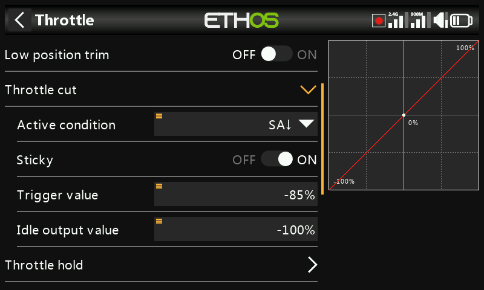
Blokada gazu — utrzymuje kanał na stałej wartości niezależnie od pozycji drążka, bez blokady bezpieczeństwa zapewnianej przez odcięcie gazu:
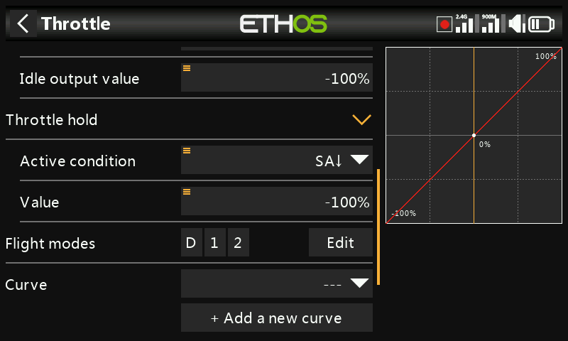
Miks gazu udostępnia również własną liczbę kanałów wyjściowych, tak jak każdy inny miks:
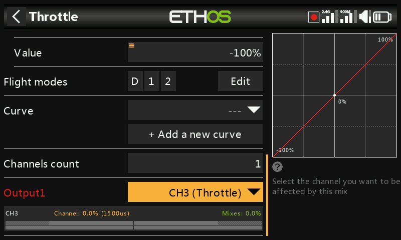
Blokada bezpieczeństwa gazu
Ethos wymaga, aby wejście miksu gazu przeszło przez wartość -100%, zanim nastąpi uzbrojenie, niezależnie od ustawień odcięcia/blokady gazu — model utworzony przez kreator wyboru modelu już to uwzględnia, ale miksy gazu tworzone ręcznie również powinny to robić.
Biblioteki miksów¶
Biblioteka predefiniowanych miksów w oknie Dodaj miks jest dostosowana do kategorii modelu wybranej podczas jego tworzenia — samolot, szybowiec, helikopter i wielowirnikowiec udostępniają różne zestawy:
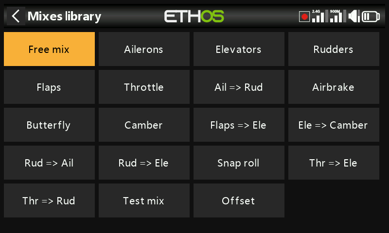
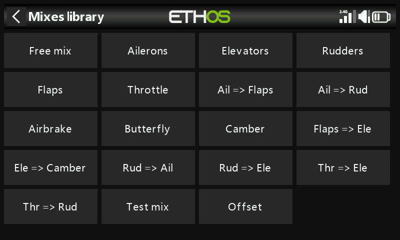
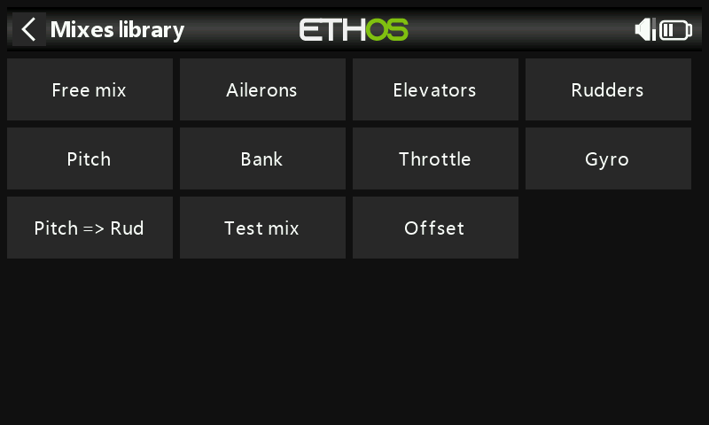
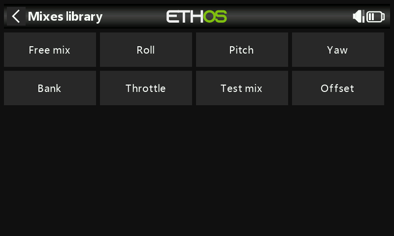
Każda biblioteka zawiera również Miks wolny — uniwersalny typ miksu bez zdefiniowanego wstępnie wejścia/wyjścia, bardziej elastyczny niż pozycje wyspecjalizowane, ale wymagający większej ilości konfiguracji, aby osiągnąć ten sam efekt.
Widok według kanałów¶
Gdy na tym samym wyjściu nałożonych jest wiele miksów, trudno ocenić ich łączny efekt na podstawie płaskiej tabeli powyżej. Wybranie miksu i opcji Widok według kanałów grupuje zamiast tego wszystkie miksy wpływające na dane wyjście:
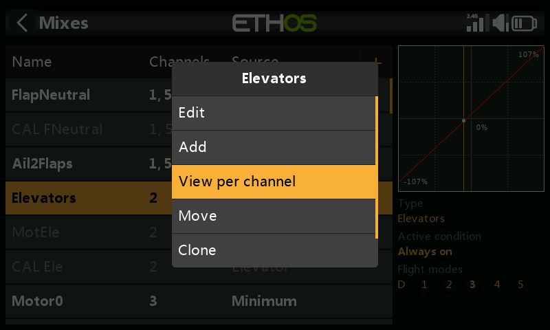
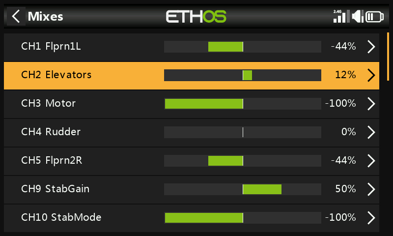
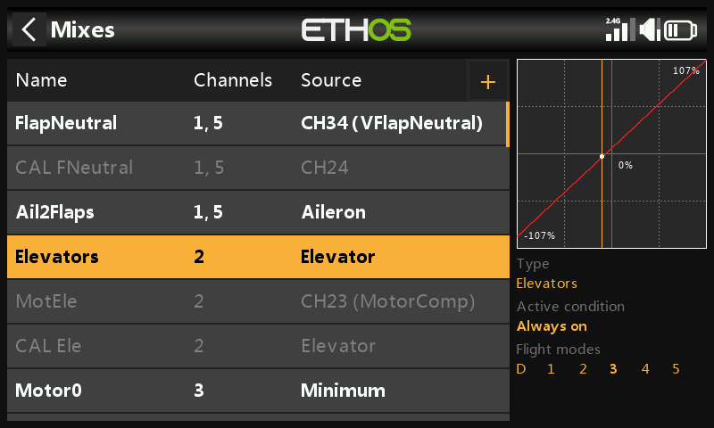
Rozwinięcie wiersza podsumowania kanału pokazuje każdy miks wpływający na ten kanał wraz z jego bieżącą wartością liczbową i graficzną — przydatne przy sprawdzaniu, ile dokładnie dodaje miks pomocniczy (np. kompensacja klapy → ster wysokości) do podstawowego sygnału z drążka:
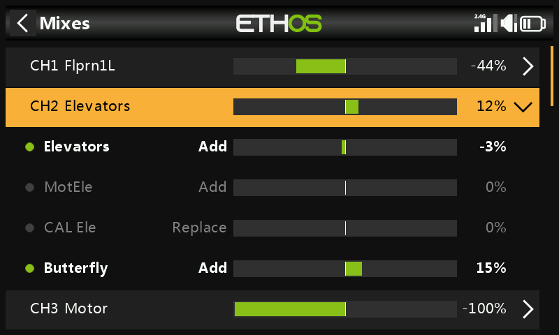
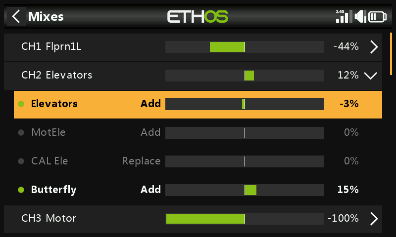
Wybranie podmiksu zamiast wiersza podsumowania otwiera to samo menu kontekstowe co w widoku tabeli (edycja, powrót do widoku tabeli, usunięcie):
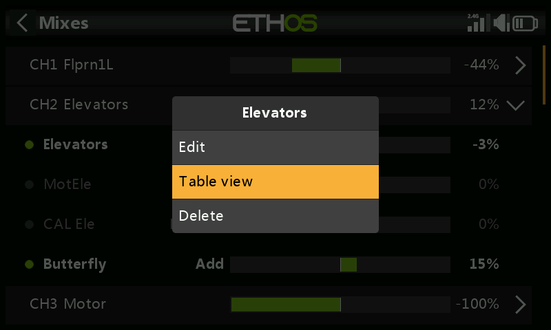